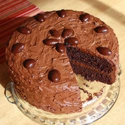

Ingredients
- 1 3/4 cups all-purpose flour
- 2 cups white sugar
- 3/4 cup unsweetened cocoa powder
- 2 teaspoons baking soda
- 1 teaspoon baking powder
- 1 teaspoon salt
- 2 eggs
- 1 cup strong brewed coffee
- 1 cup buttermilk
- 1/2 cup vegetable oil
- 1 teaspoon vanilla extract
Directions
- Preheat oven to 350 degrees F (175 degrees C). Grease and Flour two 9 inch round cake pans or one 9x13 inch pan.
- In large bowl combine flour, sugar, cocoa, baking soda, baking powder and salt. Make a well in the center.
- Add eggs, coffee, buttermilk, oil and vanilla. Beat for 2 minutes on medium speed. Batter will be thin. Pour into prepared pans.
- Bake at 350 degrees F (175 degrees C) for 30 to 40 minutes, or until toothpick inserted into center of cake comes out clean. Cool for 10 minutes, then remove from pans and finish cooling on a wire rack. Fill and frost as desired.
Prep: 15 mins
Cook: 35 mins
Ready in: 1 hr